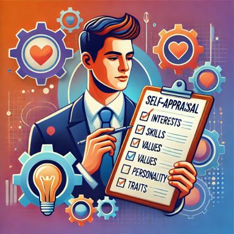

Self-Appraisal
Evaluasi Diri untuk Menentukan Jalur Karir

Definisi
Self-appraisal adalah kemampuan untuk mengevaluasi diri secara jujur dalam hal minat, nilai, keterampilan, kepribadian, dan preferensi. Proses ini membantu individu memahami siapa mereka, apa yang mereka inginkan, dan bagaimana hal itu dapat memengaruhi keputusan karir.
Langkah-Langkah Self-Appraisal
- Identifikasi Minat: Apa yang Anda sukai? Contoh: seni, sains, teknologi.
- Analisis Keterampilan: Apa keahlian Anda? Contoh: pemrograman, kepemimpinan, komunikasi.
- Refleksi Nilai: Apa yang penting bagi Anda dalam pekerjaan? Contoh: keseimbangan kerja-hidup, dampak sosial, penghasilan tinggi.
- Evaluasi Kepribadian: Gunakan alat seperti MBTI (Myers-Briggs Type Indicator) atau Big Five Personality Traits.
- Tentukan Prioritas Karir: Susun prioritas Anda berdasarkan refleksi.
Contoh Kasus
Lisa adalah seorang lulusan Psikologi yang merasa bingung dengan jalur karirnya. Setelah melakukan self-appraisal menggunakan alat seperti tes Holland’s Code, dia menyadari bahwa dirinya sangat tertarik pada interaksi sosial dan memiliki keterampilan dalam mendengarkan serta berempati. Berdasarkan hasil ini, Lisa memutuskan untuk mengejar karir sebagai konselor kesehatan mental.
Penelitian Pendukung
- Super’s Life-Span, Life-Space Theory: menekankan pentingnya eksplorasi diri dalam menentukan jalur karir yang sesuai (Super, 1990).
- Penilaian diri: meningkatkan efikasi dalam memilih karir yang sesuai dengan kepribadian dan nilai individu (Betz & Hackett, 1981).